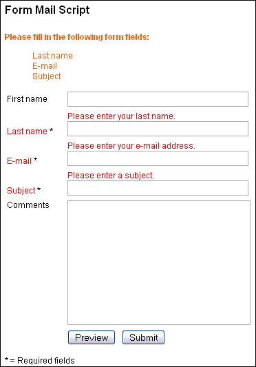

Our PHP script Schedule Organizer allows a customer, patient or client to schedule an appointment via the company's, doctor's or consultant's homepage. PHP script simplifies and automates appointment administration - the employees responsible save time as there are fewer telephone calls, faxes and letters to answer.
Thank you for your interest in our Form Mail Script. We recommend that you carefully read this documentation.
Form Mail will allow you to send information from forms on your web site, by e-mail, to one, or to multiple recipients. It lets you send e-mail as text, or as HTML. It has multiple layers of security that reduce the possibility of unauthorized use.
Therefore, in order for the script to run, you must call the Form Mail script from a form, or from a link that is on your website. This is a security feature. Before the script will run, it checks the name of the referring site, and compares it with the information that you will enter into the script configuration file. If the information matches, the script will run.
You can call the Form Mail script in two ways.
First, you can call the script directly, by using a link to the "index.php" file. This link must be on a page that is on your web site. If you use this option, the script will use the default HTML and text templates defined in the "index.php" configuration file. You can fully customize these templates. The link will look something like this;
Second, you can also call the script indirectly by using a new or existing form within a new or existing HTML page. This page must be on your web site. This method lets you process several forms with the same script. You can use this method by setting up templates, either HTML or text, that will display the information that is in the fields within your HTML forms. The script is called when the send button is clicked. You will need to put a line similar to this in your HTML.
<form action="form_mail/index.php" method="post">
Each form can use its own template. You call the template by adding a line similar to this in your HTML:
<input type="hidden" name="mail_template" value="email.tpl.txt" />
You can also send the same information to several different templates by including a line similar to this in your HTML:
<input type="hidden" name="mail_template" value="email.tpl.txt, report.tpl.txt" />
The included default HTML template is written to the the specifications of XHTML 1.0. Therefore, HTML tags like <br> or <input> contain an ending slash (<br /> or <input type="text" name="field" />). If you are using an existing HTML form, you do not need to add the ending slash.
The script is almost ready to use. Assuming that you already have unpacked the script files, you can do following steps:
Open the file templates/mail.tpl.txt in a text editor. Enter your e-mail address in the head of the file:
To: your-e-mail@example.com
You can also enter your name. But it is important that you enclose the name by double quotes and the e-mail by angle quotes:
To: "First name Last name" <your-e-mail@example.com>
Save the file and close it.
Create a subfolder on your server (i.e. /mail/ or /contact/). Copy all script files into the new folder on your server. It is important that you upload all folders and files to your server.
After you have uploaded the files you can call the file index.php in your browser, i.e.:
http://www.example.com/contact/index.php
The script is now ready for you to test. Fill in the fields and send the form.
Fetch your e-mail account. You should be a bit patient. It may take a couple of minutes until the e-mail arrives into your e-mail account.
Should you not receive any e-mails even after quite some time, start again with step 1 and try several different e-mail addresses.
In case that is not successful too you should test, if your server is capable of sending e-mails. Create a PHP file mailtest.php with following content:
<?php
mail('your-e-mail@example.com', 'Test Subject', 'Test Message');
?>
Upload that file to your server and call it in your browser. In the rare event that event that does not work, you should contact your web host.
The first thing you need to do is open the "index.php" configuration file in a text editor. You can use Notebook or Simple Text. Scroll down to the line that says:
$referring_server = 'www.stadtaus.com, stadtaus.com, scripts'
Replace 'www.stadtaus.com, stadtaus.com" with your web site's address. Be sure to leave the quotes. Enter it with, and without www. It is also a good idea to enter your IP address. For example:
$referring_server = 'www.your-server.com, your-server.com, 123.654.987.15, scripts';
If you do not do this, you will get the error message 'Wrong or empty referrer (referring site)!'
You may also get this message if your server has a firewall that stops the script from seeing the referrer. You can work around this by leaving the variable $referring_server empty. This will disable the referrer check. If you do this, make sure to place your e-mail address directly in the e-mail template. This makes the script useless to spammers, because e-mail can only be sent to the address in the template.
| $language | This variable lets you choose the language the script will use for error messages. To choose English enter en between the quotes. For German, enter de between the quotes. For Spanish, enter es between the quotes.
|
The following features are designed to prevent a third party (spammers) from abusing the script. You can set the script to limit the number of e-mails an IP address can send within a time period that you also can set. This is accomplished by linking the number of e-mails sent, to the IP address of the user.
| $ip_banlist | This variable can contain the IP addresses of servers that you never want to access your Form Mail Script. Be careful, many different users may use a single IP address. If you do not want to use this feature, just leave the variable empty.
|
|
| $ip_address_count | This variable lets you set the maximum number of e-mails that you want to let a user send, during one visit to your web site. Once this number is reached, the user will not be able to send more e-mails from your site, until the next time they dial in to the Internet. The number 0 (null, zero) turns this function off.
|
|
| $ip_address_duration | This variable sets the number of hours, from the time someone firsts sends an e-mail from your site, before they can send more e-mails. After the number of hours you set pass, the user can send e-mails from your site again.
|
|
| $show_limit_errors | This variable lets you decide if you want the script to show an error message, once the user has reached the maximum number of e-mails you have set.
|
|
| $log_messages | This variable lets you turn the logging function on or off. In order for this feature to work, the "log" directory, and the file "log/logfile.txt" both must have their writable permissions set to: chmod 777.
|
|
| $text_wrap | This variable sets the maximum number of character you want on a line in your e-mail. After this number is reached, a line break will automatically be added. If no value is defined, no line break will be added.
|
|
| $show_error_messages | This variable is initially set to "yes". This will let the script send you error messages during the configuration process. This will help you to install the script. After you have finished configuring the script, you should set this variable to "off". Do not leave it set to "yes". It is not wise to give visitors to your site a view into the workings of the script.
|
|
| $path['logfile'] | This variable contains the path to the log file.
|
|
| $path['templates'] | This variable contains the path to the HTML and text mail template files. The path can be relative (./templates/ or templates/). It can also be absolute ( /usr/local/etc/httpd/.../form_mail/templates/). Please be sure to include the ending slash.
|
|
| $file['default_html'] | If you are calling the script directly, by using a link, this variable must contain the file name of the HTML template. The script will automatically use this template.
|
|
| $file['default_mail'] | If you are calling the script directly, by using a link, this variable must contain the file name of the text mail template. The script will automatically use this template.
|
|
| $add_text | You can add further values, text, variables or other content to this variable. This content can then be displayed in the HTML template by using markers/placeholders within curly brackets { and }.
|
$add_text = array(
'txt_additional' => 'Additional',
'txt_more' => 'More'
);
The first part of each entry is the name of the placeholder. To use the value of txt_addition in your template, place the name of the entry inside curly brackets. For example; {txt_addition}. The name of an entry must not contain white spaces or special characters. Only the underscore " _ " is allowed.
The "templates" directory contains the files that determine the layout of your page. You can use HTML and CSS to customize the layout as you wish.
If you are using a WYSIWYG editor like Dreamweaver, Frontpage or NetObjects, please make sure that the software does not make any changes by itself.
The "examples" subfolder contains additional HTML forms. You can use them as examples for creating your own forms. For example, the "alternative_form.tpl.html" template shows you how to let the visitor choose to recommend the page he has just visited, or the homepage. The "advanced_form.tpl.html" template contains examples of how to integrate checkboxes, radio buttons and select menus into your form.
The template files contain markers with { and } like: {txt_next_page}. These markers will be replaced by its counterparts from the language file "languages/language.en.inc.php". You are free to edit that file and change the words and phrases. You are also free to replace the markers within the template files with real words, or to put those markers in other positions within the template file. You can also enhance the language file by using the given pattern.
The following placeholder is not included in the language file and should not be changed.
{message}
{fields}
The script allows you to include files directly into the HTML template files. It makes no difference whether you want to include PHP, HTML or other text files. For example:
<INCLUDE FILENAME="header.php">
The script automatically replaces this line with the content of the file "header.php". Please pay attention that relative paths (../ etc.) start at the main directory of the script (same level as the index.php file).
If you use absolute paths (path starts with slash), the path starts at the www root folder of your web account by default. For example:
/logs/ /images/ /layout/ /layout/header.php /form_mail/ /form_mail/templates/ /form_mail/templates/form.tpl.html /form_mail/index.php
Let us assume you want to include the file "header.php" into the file "form.tpl.html". If you use a relative path, you need to start at the same level as the file "index.php" is:
<INCLUDE FILENAME="../layout/header.php">
If you want to use an absolute path, you need to write your path starting at the www root folder:
<INCLUDE FILENAME="/layout/header.php">
You can find example files in the folder "templates/examples_includes/".
If there is an error, or a form field is left blank, the script will automatically enter a placeholder with the same name as the form field. That is to pre-fill the form fields so the user doesn't have to fill in all fields another time. For example:
<input type="text" name="lastname" value="{lastname}">
You can add more fields to a form or change the existing fields of a form. Please make sure that the field names and the placeholder names do not contain white spaces, or special characters. They may have underscores ("first_name") in them.
The script allows you to send a recommendation e-mail to an arbitrary number of recipients. The simplest way would be to add the desired number of form fields - one for each recipient e-mail - to your form.
You can select any field name (only alphanumeric and underscore), but every field name must start with the word "multiple_" (note the underscore) and end with a consecutively number "_1" (note the underscore).
In the folder "templates/examples/" you can find an example form and mail template. The HTML template file "multiple_recipientes_form.tpl.html" has been prepared for sending the recommendation e-mail to multiple recipients. The folder also contains the e-mail template file "multiple_recipients_mail.tpl.txt".
Let us suppose you want to let your visitors send e-mails to up to four recipients. If we choose, for example, the name "recipient_email" as field name, our multiple field names would be following:
multiple_recipient_email_1 multiple_recipient_email_2 multiple_recipient_email_ 3 multiple_recipient_email_4
The complete form fields would look like this:
<input type="text" name="multiple_recipient_email_1" value="{multiple_recipient_email_1}" />
<input type="text" name="multiple_recipient_email_2" value="{multiple_recipient_email_2}" />
<input type="text" name="multiple_recipient_email_3" value="{multiple_recipient_email_3}" />
<input type="text" name="multiple_recipient_email_4" value="{multiple_recipient_email_4}" />
The field names - surrounded by curly brackets - are automatically the template variables for the field values (value="...").
The script allows you to assign an arbitrary number of additional form fields to every recipient. Every field that starts with "multiple_" will automatically assigned to the corresponding recipient, based on the trailing number.
<input type="text" name="multiple_firstname_4" value="{multiple_firstname_4}" />
<input type="text" name="multiple_lastname_4" value="{multiple_lastname_4}" />
<input type="text" name="multiple_recipient_email_4" value="{multiple_recipient_email_4}" />
The script uses the same e-mail template file for every recipient. The template variables (those in curly brackets) have the same name as their corresponding fields in the form template. But you need to replace the trailing numbers with a question mark. The script recognizes those variables and replaces them with correct values. For example:
To: "{multiple_first_name_?} {multiple_last_name_?}" <{multiple_email_?}>
The script uses the same mail template file for all recipients. All non-multiple field values appear in every e-mail.
Every form field can be marked as a mandatory field. This means that the form will not be submitted until these fields are filled in. Enter all the field names you want to be mandatory, in a hidden form field in the template. For example:
<input type="hidden" name="required_fields" value="lastname, email, subject" />
Like the mandatory fields you can define fields that you want to be checked to make sure they have the correct e-mail syntax. Enter all the e-mail field names you want to be checked, in a hidden form field in the template. For example:
<input type="hidden" name="email_fields" value="email_1, email_2" />
If a required field has not been filled out by a visitor an error message will be displayed above the form fields by default.
The script allows you to display error messages right beside, above or below a form field. Moreover, the script allows you to alter the appearance of the form label. Following screenshot shows an example:

Following three variables are available:
{required:fieldname='Error message':endrequired}
{syntax:fieldname='Error message':endsyntax}
{error:fieldname='Default text'||='Error message':error}
Let us suppose you have a field "last_name" and you define it as required field. You can use following variable for the error message:
{required:last_name='Please enter your last name.':endrequired}
In case the visitor has not filled out the field, the variable will be replaced with the error message:
Please enter your last name.
You could format the error text using CSS:
{required:last_name='<span style="font-weight:bold;color:#FF0000;">Please enter your last name.</span>':endrequired}
The error text now appears in bold font and in red color:
Please enter your last name.
Let us suppose you have a field "email" and you define it as e-mail syntax field. You can use following variable for the error message:
{syntax:email='Please enter a valid e-mail address.':endsyntax}
In case the visitor has not filled out the field correctly, the variable will be replaced with the error message:
Please enter a valid e-mail address.
You could format the error text using CSS:
{syntax:email='<span style="font-weight:bold;color:#FF0000;">Please enter a valid e-mail address.</span>':endsyntax}
The error text now appears in bold font and in red color:
Please enter a valid e-mail address.
You can use following variable, if you want to change the appearance of the form field label. Let us suppose you have a field "subject " and you define it as required field. You can use following variable in order to change the appearance of the label:
{error:subject='Subject'||='<span style="color:#FF0000;">Subject</span>.':enderror}
Without an error the first part (everything before the two vertical lines - pipes) will be displayed. In case the visitor has not filled out the field, the variable will be replaced with the second part:
For a better understanding you could take a look at the example in the folder "templates/examples/".
After the form has been submitted the user will be redirected to a page you can define in a hidden form field in the template. For example:
<input type="hidden" name="thanks" value="http://www.your-server.com/thanks.html" />
Please enter the whole URL including http:// and the domain name (i.e.: http://www.your-domain.com/).
If you don't define this field or leave it empty the script displays the data entered by the user.
If you are calling the script from an existing form in a HTML page, and do not want to use the default HTML file, you can define another HTML file in a hidden form field in the template. For example:
<input type="hidden" name="html_template" value="form.tpl.html" />
The mail template can be defined the same way. You can define a single mail template. For example:
<input type="hidden" name="mail_template" value="mail.tpl.txt" />
You can also define more than one mail template. Each of these templates can contain different recipients and contents. For example:
<input type="hidden" name="mail_template" value="mail.tpl.txt, mail2.tpl.txt" />
The script can process select menus like the following:
<select name="" size=""> <option value=""></option> <option value=""></option> </select>
An exception is multiple select menus.
How to make sure the value selected by the user appears after a new load of the form shows the following example:
<select name="Salutation" size="2">
<option value="Mr" {select:Salutation=Mr}>Mr</option>
<option value="Ms" {select:Salutation=Ms}>Ms</option>
</select>
The placeholder {select:Salutation=Ms} contains of the following elements. In the first position is the type of form field you are using. In this case it is a select menu (= select). After that follows a colon ( : ). In the second position is the name of the form field. In the example above that is "Salutation". After that follows an equal sign (=). At the last position is the value of the option tag (value="").
To make the selected value appear within the mail template, you need to enter the name surrounded by curly brackets { } in the mail template.
{select:Salutation}
In case a user did not select one of the options the script removes the placeholder from the mail template.
The script can process checkbox fields like the following:
<input type="checkbox" name=" " value="" />
You can make sure the value selected by the user will appear after a new load of the form. For example:
<input type="checkbox" name="Newsletter" value="Yes" {checkbox:Newsletter=Yes} />
The placeholder {checkbox:Newsletter=Yes} contains of the following elements. In the first position is the type of form field you are using. In this case it is a checkbox field (= checkbox). After that follows a colon ( : ). In the second position is the name of the form field. In the example above that is "Newsletter." After that follows an equal sign (=). In the last position is the value of the option tag (value="").
To make the selected value appear within the mail template, you need to enter the name surrounded by curly brackets {checkbox:} in the mail template. For example:
{checkbox:Newsletter}
In case a user did not select the checkbox the script removes the placeholder from the mail template.
The script can process radio button fields like the following:
<input type="radio" name=" " value="" />
You can make sure the value selected by the user appears after a new load of the form. For example:
<input type="radio" name="Salutation" value="Mr" {radiobutton:Salutation=Ms} />
The placeholder {radiobutton:Salutation=Ms} contains of the following elements. In the first position is the type of form field you are using. In this case it is a radio button field (= radiobutton). After that follows a colon ( : ). In the second position is the name of the form field. In the example above that is"Salutation". After that follows an equal sign (=). In the last position is the value of the option tag (value="").
To make the selected value appear within the mail template, you need to enter the name surrounded by curly brackets - {radiobutton:} - in the mail template. For example:
{radiobutton:Salutation}
In case a user did not select any of the radio buttons the script removes the placeholder from the mail template.
You can find examples of the above described features in the template "advanced_form.tpl.html".
At the top of the mail template is the header data. For example:
Recipient To: Sender From: Subject Subject: Carbon Copy CC: Blind Carbon Copy BCC:
You can define the e-mail recipient within the template like this:
To: name@your-server.com
In addition, you can add several recipients with carbon copy and blind carbon copy:
CC: name@other-server.com CC: chef@company.com BCC: secret@another_company.com
Note: You can not send more than one e-mail to one domain. If more than one e-mail is sent to a domain, only one will be received. The following example will not work:
To: name@company.com CC: chef@company.com
You can easily work around this, if you have access to mail forwarding on your server. Simply set up an e-mail address that will forward e-mail to the desired addresses. For example, you can set up an e-mail address (list@company.com). Mail sent to this address will be forwarded to the other two addresses (name@company.com and chef@company.com).
You can define the sender within the mail template. For example:
From: chef@company.com
You can also use information from the form. For example:
From: {email}
You also can add the name of the sender. In this case the name is followed by the e-mail address which stands between angle brackets.
From: {firstname} {lastname} <{email}>
Below the e-mail head area (header) must be an empty line (two line breaks). Below that line follows the mail content. You can customize the mail content as you like. If you add fields to your form, you will also need to place the name of those fields, within curly brackets, in the mail template.
Make sure that the names of the fields on your form, are identical to the names you place within the curly brackets, in your mail template.
Display all form data with one placeholder
You can display all form data with just one placeholder. Just add the following placeholder to the e-mail template:
{all_content}
In HTML e-mails you can use following variable. All form values are automatically displayed in a table.
{all_content_table}
Environment variables and server date and time
The following environment variables are provided by the Form Mail Script. To make these variables appear within an e-mail you need to place the following placeholders in your template:
| {env_user_agent} | Browser software of the user (Mozilla, Netscape, Opera, Internet Explorer).
|
|
| {env_remote_address} | IP-Address of the user.
|
|
| {env_remote_host} | Host name of the user.
|
|
| {env_year} | Year
|
|
| {env_month} | Month
|
|
| {env_day} | Day
|
|
| {env_hour} | Hour
|
|
| {env_minute} | Minutes
|
|
| {env_second} | Seconds
|
The directory “log” and the file “logfile.txt” must be writeable (chmod 777).
For the answers to your questions about Form Mail Script, and for the solutions to your problems with Form Mail Script, visit our support forum.
You can use the For Mail Script for free. If you want to run the script without the ad link you can purchase the full version online.
The full version includes free updates and upgrades.
Contact: